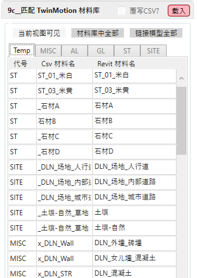
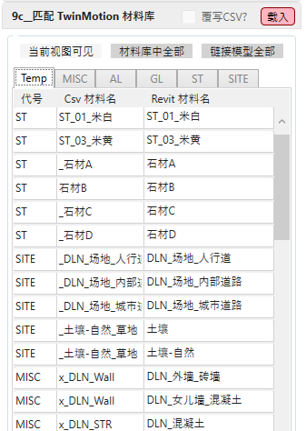

解决Revit与Twinmotion材料库无法快速匹配的问题

展开面板后点击 载入 按钮,
将依照所选CSV挡案自动匹配 Revit 项目中材料和 TwinMotion 材料库:

将依照所选CSV挡案自动匹配 Revit 项目中材料和 TwinMotion 材料库:

若需复写既有的或空白的匹配材料,
先在第一栏的选择 代号 -> 接着在第二栏选择 Csv 材料名

先在第一栏的选择 代号 -> 接着在第二栏选择 Csv 材料名
匹配更换完成后可在其他页签确认已经修改的材料

最后勾选 复写CSV 以覆盖先前载入的档案
最后勾选 复写CSV 以覆盖先前载入的档案